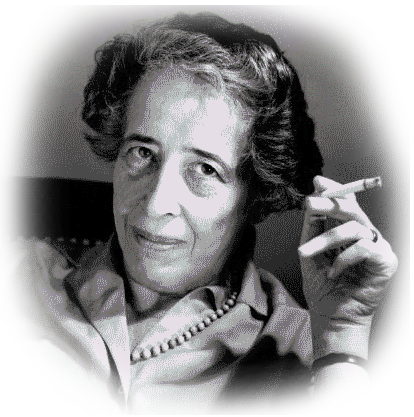
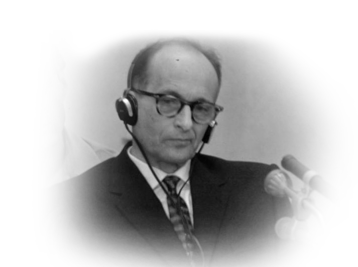

La banalità del male: la Shoah e l’incapacità di pensare

Sul piano morale e filosofico, l’orrore della Shoah è stato
ampiamente argomentato da Hannah Arendt (1906-1975), storica e
filosofa della politica, ebrea tedesca naturalizzata statunitense,
che nel 1961 seguì dall’inizio alla fine il processo Eichmann, famigerato
criminale nazista, tenutosi a Gerusalemme, come inviata del settimanale
New Yorker.
Il gerarca del Reich fu catturato dai servizi segreti
israeliani in Argentina nel 1960: giudicato da un tribunale israeliano,
tenne a precisare che in fondo lui si era occupato “soltanto dei trasporti”.
Fu giustiziato per impiccagione il 31 maggio del 1962, mentre il resoconto
e le riflessioni dell’autrice vennero pubblicate integralmente nel 1963 ne
“La banalità del male (Eichmann a Gerusalemme)”.

Otto Adolf Eichmann era stato responsabile della sezione degli affari
concernenti gli ebrei dell’Ufficio Centrale per la Sicurezza del Reich
(RSHA), svolgendo una funzione essenziale del regime nazista su scala
europea: l’organizzazione delle deportazioni di ebrei, omosessuali,
disabili, prigionieri politici e testimoni di Geova verso i campi di
concentramento e sterminio.
La prima impressione della Arendt alla vista
di Eichmann è inquietante: un individuo pressoché normale, né mostruoso
né demoniaco, la cui mediocrità e superficialità la lasciarono sgomenta
nel pensare al male da lui commesso.In lui, la donna non riconobbe
stupidità, bensì qualcosa di enormemente più negativo: l’incapacità
di pensare.
Eichmann aveva sempre agito entro gli stretti limiti stabiliti dalla
legge e dagli ordini, con una cieca obbedienza condivisa da un’intera
classe dirigente, composta di uomini “normali” responsabili di crimini
spaventosi. Da questa assunzione di base, la Arendt elaborò la tesi della
“banalità del male”: tale senso di adempienza e normalità fa sì che
alcuni atteggiamenti solitamente ripudiati dalla società, tra cui
l’agenda della Germania nazista, possano essere messi in atto dal
cittadino comune, che obbedisce incondizionatamente alle regole senza
riflettere sul loro contenuto.
L’aspetto più agghiacciante di tale irriflessività è il fatto che crimini
efferati possano essere commessi in circostanze tali da renderli quasi
impercettibili: il Novecento ha dimostrato al mondo come convenzioni
etiche e morali che si credevano radicate possano essere stravolte in
pochi anni dai regimi totalitari, con una minima resistenza da parte
della popolazione. I pochi oppositori non furono “supereroi”, personaggi
straordinari, bensì gente comune che domandò a sé stessa sino a che punto
sarebbe stata disposta ad andare contro la propria coscienza per conformarsi
alle regole: è proprio dal dialogo con il proprio io interiore che
scaturisce il pensiero, come sosteneva lo stesso Socrate.
La facoltà di pensare deriva dallo spirito critico,
cioè dalla capacità, dei singoli e della collettività,
di valutare la realtà in maniera problematica, riflessiva,
indipendentemente dal modello etico-culturale che ci circonda,
al fine di esprimere un giudizio. Il libero pensiero consente
di visualizzare il mondo come una tela bianca, priva di preconcetti,
sulla quale l’opera esistenziale di ognuno di noi prende vita
autonomamente nella sua unicità. Il libero pensiero è la forma più nobile
e profonda di contrasto all’indifferenza, complice silenziosa di qualsiasi
ingiustizia, per citare le parole della senatrice Liliana Segre. Il libero
pensiero è l’antidoto, la prevenzione del male, non a caso il primo
ostacolo rimosso dai regimi dittatoriali. E dobbiamo difenderlo a tutti
i costi.